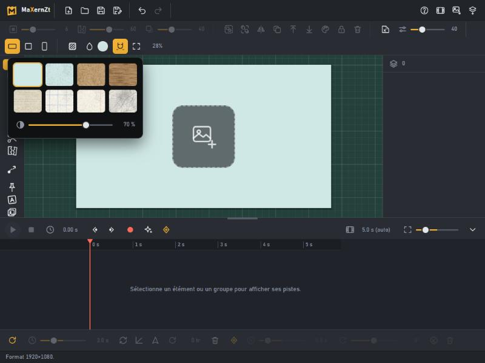
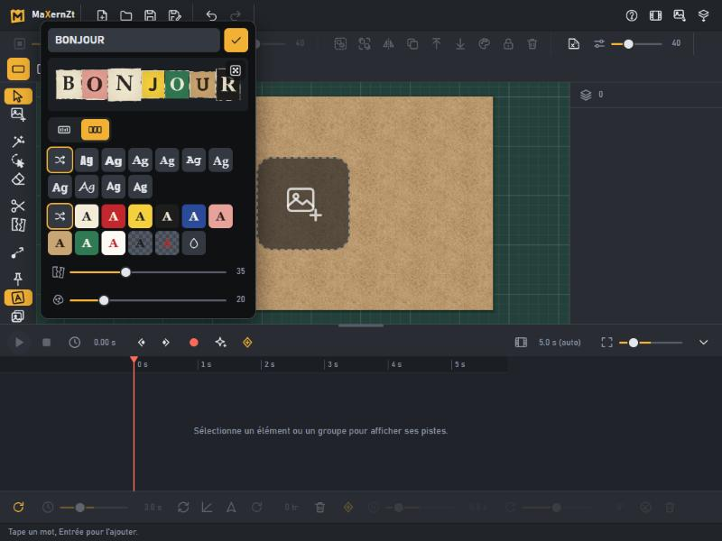
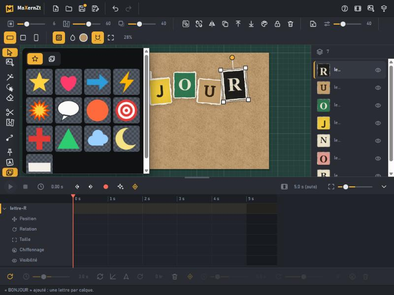
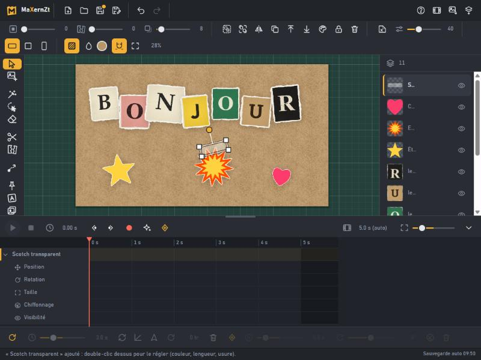

Votre premier collage
En dix minutes, sans aucune photo : un papier kraft, un mot en lettres découpées, des formes et du scotch. Vous aurez vu les gestes de base de MaXernZt.
Ouvrir l'application et choisir la feuille
Cliquez sur « Ouvrir l'appli » : la feuille vide apparaît. Dans la barre d'options, sous les réglages, choisissez le format : 16/9, carré ou 9/16.
La molette zoome, le clic droit (ou la molette enfoncée) déplace la vue, la touche 0 recadre tout. L'aide complète est sur F1.
Choisir un papier de fond
Le bouton aux hachures ouvre les textures : papier grainé, kraft, carton, papier journal, cahier à carreaux ou à lignes, papier froissé. Choisissez le kraft, puis réglez l'intensité avec le curseur. La pastille de couleur permet de changer la teinte du papier.

Composer un mot en lettres découpées
Appuyez sur T. Tapez un mot : l'aperçu se met à jour. Choisissez « une lettre par papier » (chaque lettre sera un élément indépendant, pratique pour l'animer), puis la police, les couleurs, la déchirure et l'état du papier (du propre au sali). Le dé propose une autre variante. Entrée ajoute le mot à la feuille.

Un mot déjà posé se modifie par un double-clic sur l'une de ses lettres.
Placer, tourner, agrandir
- Déplacer : glissez un élément.
- Taille : tirez un coin du cadre. Rotation : la poignée ronde au-dessus ; Maj cale par crans de 15°.
- L'aimantation colle les bords et centres à la feuille et aux autres éléments (guides roses) ; Alt la suspend le temps d'un geste.
- Un clic sélectionne un élément ; Maj+clic en ajoute. Les groupes se sélectionnent dans le panneau de droite.
Ajouter des formes et du scotch
L'icône album ouvre la banque d'images : l'onglet étoile propose des formes prêtes à l'emploi (étoile, cœur, explosion, flèche, bulle…), un clic les ajoute. Avec E, les accessoires : scotch, peinture, punaises, trombones, avec couleur, longueur et état réglables.

Double-cliquez sur un accessoire posé pour rouvrir ses réglages. Les effets de couleur (icône palette) changent la teinte d'une forme.
Enregistrer et exporter
Ctrl+S enregistre le projet (fichier .maxernzt, sur votre ordinateur) ; Ctrl+O le rouvre. En cas de fermeture accidentelle, un brouillon est gardé automatiquement et proposé au prochain lancement. L'icône PNG exporte l'image de la feuille.
